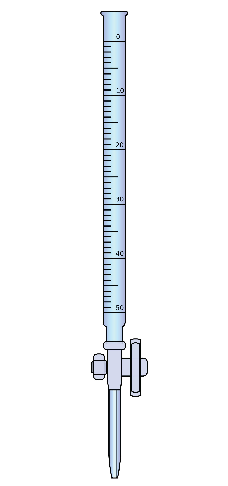

The reaction of an acid with a base to make a salt and water is a common reaction in the laboratory, partly because so many compounds can act as acids or bases. Another reason that acid-base reactions are so prevalent is because they are often used to determine quantitative amounts of one or the other. Performing chemical reactions quantitatively to determine the exact amount of a reagent is called a titrationA chemical reaction performed quantitatively to determine the exact amount of a reagent.. A titration can be performed with almost any chemical reaction for which the balanced chemical equation is known. Here, we will consider titrations that involve acid-base reactions.
In a titration, one reagent has a known concentration or amount, while the other reagent has an unknown concentration or amount. Typically, the known reagent (the titrantThe reagent of known concentration.) is added to the unknown quantity and is dissolved in solution. The unknown amount of substance (the analyteThe reagent of unknown concentration.) may or may not be dissolved in solution (but usually is). The titrant is added to the analyte using a precisely calibrated volumetric delivery tube called a burette (also spelled buret; see Figure 12.1 "Equipment for Titrations"). The burette has markings to determine how much volume of solution has been added to the analyte. When the reaction is complete, it is said to be at the equivalence pointThe point of the reaction when all the analyte has been reacted with the titrant.; the number of moles of titrant can be calculated from the concentration and the volume, and the balanced chemical equation can be used to determine the number of moles (and then concentration or mass) of the unknown reactant.
Figure 12.1 Equipment for Titrations
A burette is a type of liquid dispensing system that can accurately indicate the volume of liquid dispensed.
For example, suppose 25.66 mL (or 0.02566 L) of 0.1078 M HCl was used to titrate an unknown sample of NaOH. What mass of NaOH was in the sample? We can calculate the number of moles of HCl reacted:
# mol HCl = (0.02566 L)(0.1078 M) = 0.002766 mol HClWe also have the balanced chemical reaction between HCl and NaOH:
HCl + NaOH → NaCl + H2OSo we can construct a conversion factor to convert to number of moles of NaOH reacted:
Then we convert this amount to mass, using the molar mass of NaOH (40.00 g/mol):
This is type of calculation is performed as part of a titration.
What mass of Ca(OH)2 is present in a sample if it is titrated to its equivalence point with 44.02 mL of 0.0885 M HNO3? The balanced chemical equation is as follows:
2HNO3 + Ca(OH)2 → Ca(NO3)2 + 2H2OSolution
In liters, the volume is 0.04402 L. We calculate the number of moles of titrant:
# moles HNO3 = (0.04402 L)(0.0885 M) = 0.00390 mol HNO3Using the balanced chemical equation, we can determine the number of moles of Ca(OH)2 present in the analyte:
Then we convert this to a mass using the molar mass of Ca(OH)2:
Test Yourself
What mass of H2C2O4 is present in a sample if it is titrated to its equivalence point with 18.09 mL of 0.2235 M NaOH? The balanced chemical reaction is as follows:
H2C2O4 + 2NaOH → Na2C2O4 + 2H2OAnswer
0.182 g
How does one know if a reaction is at its equivalence point? Usually, the person performing the titration adds a small amount of an indicatorA substance whose color change indicates the equivalence point of a titration., a substance that changes color depending on the acidity or basicity of the solution. Because different indicators change colors at different levels of acidity, choosing the correct one is important in performing an accurate titration.
Define titration.
What is the difference between the titrant and the analyte?
True or false: An acid is always the titrant. Explain your answer.
True or false: An analyte is always dissolved before reaction. Explain your answer.
If 55.60 mL of 0.2221 M HCl was needed to titrate a sample of NaOH to its equivalence point, what mass of NaOH was present?
If 16.33 mL of 0.6664 M KOH was needed to titrate a sample of HC2H3O2 to its equivalence point, what mass of HC2H3O2 was present?
It takes 45.66 mL of 0.1126 M HBr to titrate 25.00 mL of Ca(OH)2 to its equivalence point. What is the original concentration of the Ca(OH)2 solution?
It takes 9.77 mL of 0.883 M H2SO4 to titrate 15.00 mL of KOH to its equivalence point. What is the original concentration of the KOH solution?
a chemical reaction performed in a quantitative fashion
False; a base can be a titrant, or the reaction being performed may not even be an acid-base reaction.
0.494 g
0.1028 M